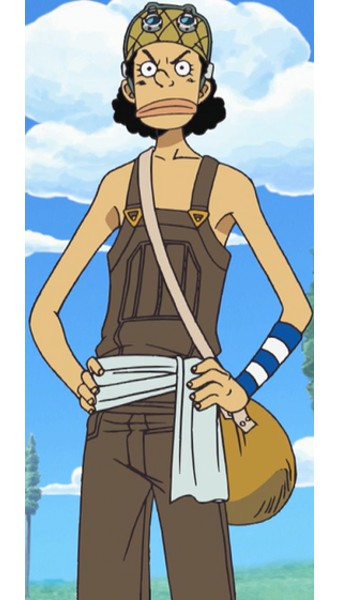

 원피스의 등장인물. 밀짚모자 일당의 저격수. 몽키 D. 루피의 세번째 동료. 빨간 머리 해적단의 저격수 '추격자' 야솝의 아들이다. 고향 시롭 마을에서 우솝 해적단의 캡틴으로 해적 놀이에 빠져 사는 나날을 보내고 있었으나 루피와 만나 아버지처럼 용감한 바다 사나이가 되기 위해서 진짜 해적이 되었다. 선장 루피와 함께 밀짚모자 일당 특유의 왁자지껄한 분위기를 만드는 분위기 메이커다. 또 다른 정체성으로 '저격의 제왕' 저격왕이 있다. 허풍쟁이에 거짓말쟁이고 겁이 많아 평소에는 도망치기 일쑤지만 동료의 긍지를 지키기 위해서라면 결사의 각오로 강적에게 맞선다.